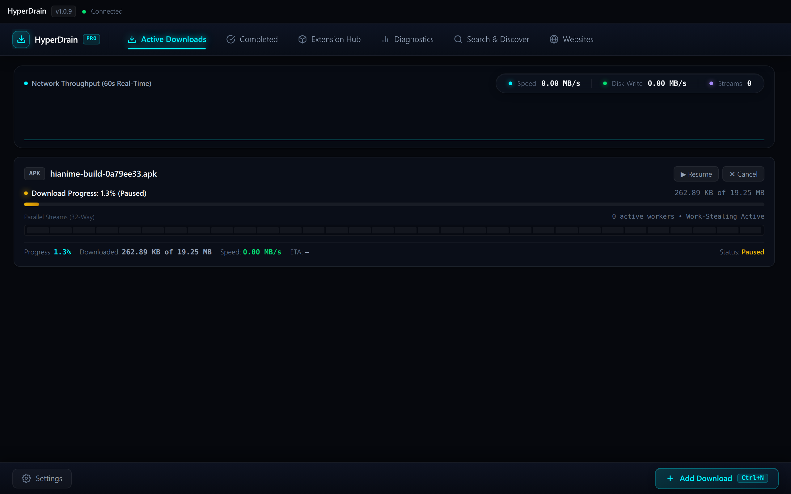
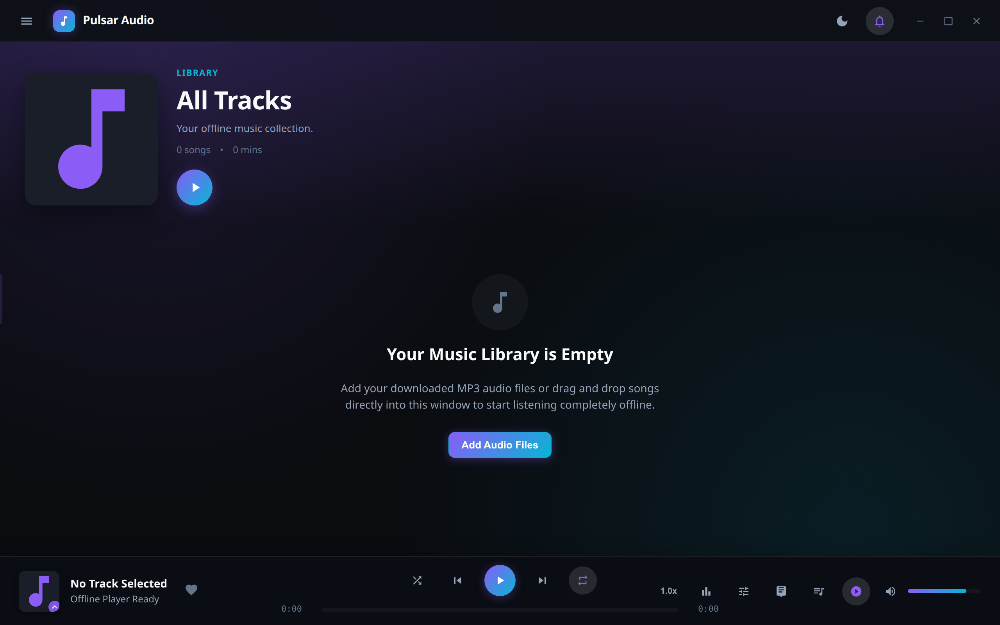
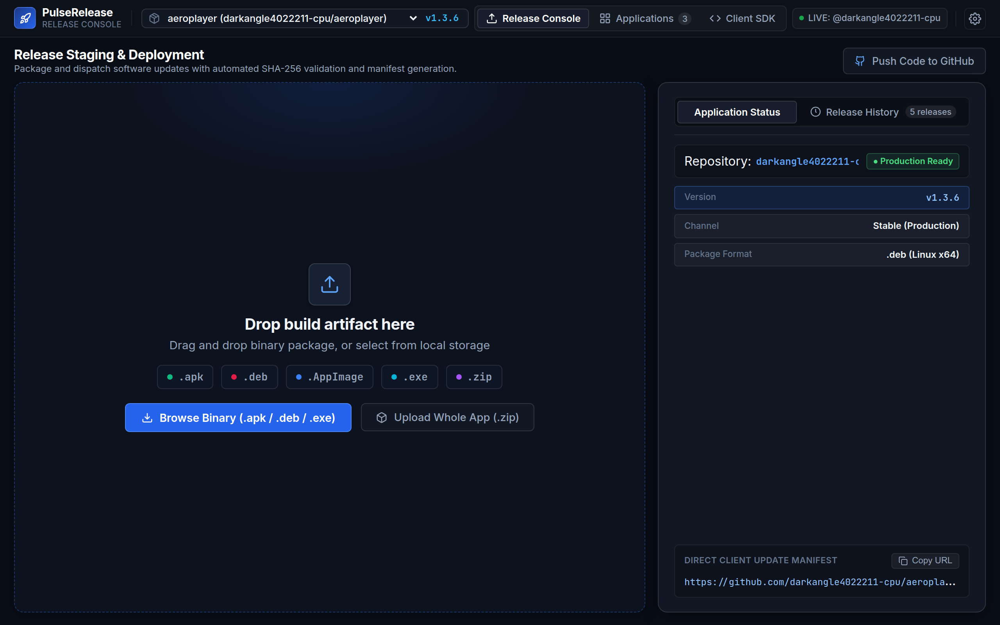

32-stream chunk engine
The Go backend opens up to 32 HTTP/2 connections per task and writes chunks directly to their final byte offsets via positional pwrite / WriteAt—eliminating slow post-download file merging.
Linux Desktop Utility · Go Engine + Electron Shell
HyperDrain splits transfers across up to 32 parallel HTTP streams, reserves disk space up front with
fallocate, and checkpoints byte offsets in SQLite WAL every second—so a dropped Wi-Fi link or power cut never wastes a 30 GB download.
curl -fsSL https://github.com/darkangle4022211-cpu/hyperdrain/releases/download/v1.0.9/hyperdrain_1.0.9_amd64.deb -o /tmp/hyperdrain.deb && sudo apt install -y /tmp/hyperdrain.deb
Note on download speed: This first installer download comes directly from GitHub's global CDN (objects.githubusercontent.com) via your browser. Once HyperDrain and its Manifest V3 extension are installed, your future downloads automatically hand off to HyperDrain's 32-stream Go engine.

WriteAtfallocate pre-allocation (0 file joining)Why a native Go engine beats standard single-stream browser downloads on large files.
The Go backend opens up to 32 HTTP/2 connections per task and writes chunks directly to their final byte offsets via positional pwrite / WriteAt—eliminating slow post-download file merging.
Stalled sockets are detected within 10 seconds and respawned at the exact interrupted byte range, with exponential jitter backoff for HTTP 429 and 503 responses.
Includes a 1-click exportable Manifest V3 extension (Chrome, Brave, Edge, Firefox) that forwards cookies, Referer, and User-Agent headers, plus an embedded media sniffer for .m3u8 and .mp4 streams.
Streams multi-gigabyte ZIP/RAR archives on completion, wakes via hyperdrain://wake deep links, and stays quiet in the system tray with an IDM-style 480×250 mini progress window.
hyperdrain://wake deep-link handoff from browsers.update.json with zero changes to core engine throughput.Packaged Linux and Windows desktop software built and maintained in the same ecosystem.

Offline MP3/FLAC/WAV desktop music player with custom playlists, a 10-band graphic equalizer, ID3 cover art parsing, MPRIS desktop integration, and a 60fps Web Audio visualizer.

Desktop release console and language-agnostic auto-updater. Drag and drop .deb, .AppImage, .exe, or .apk artifacts to hash with Web Crypto SHA-256, publish to GitHub Releases, and generate update.json.